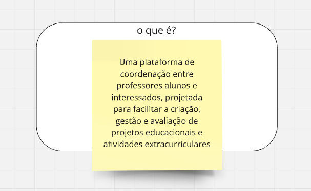
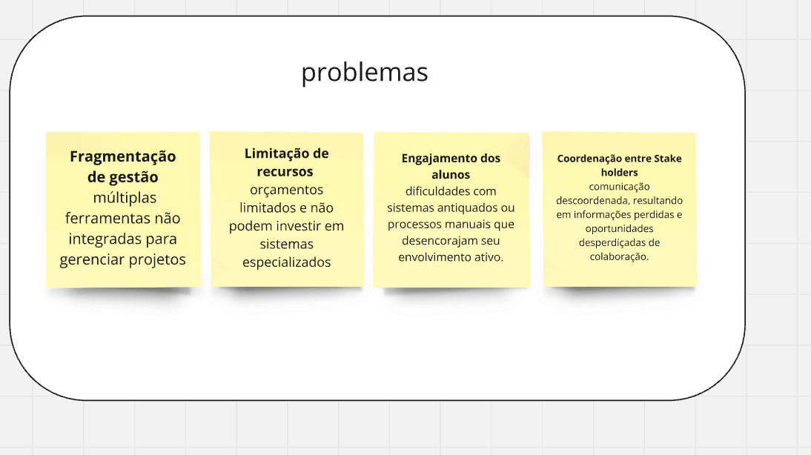
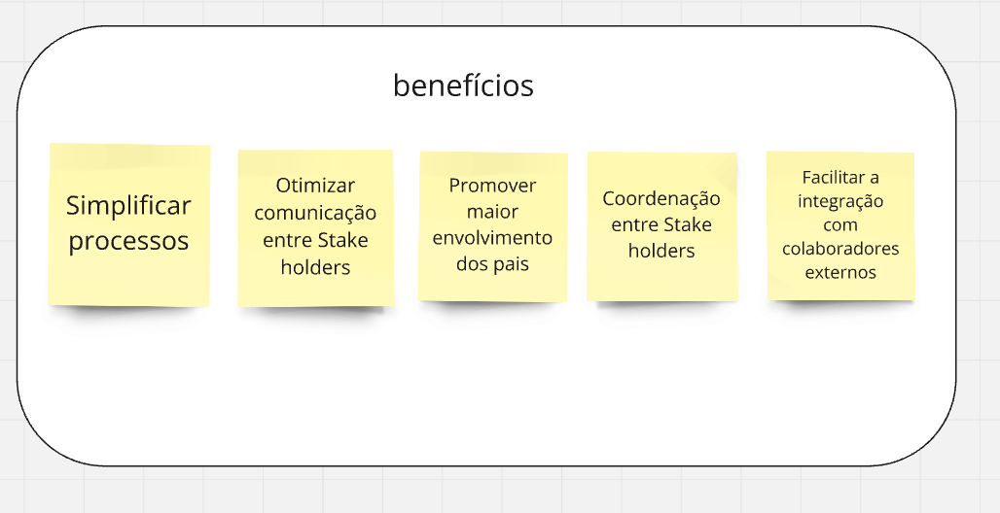
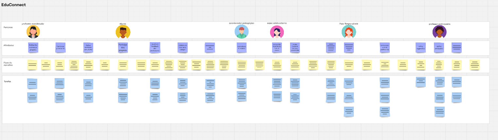
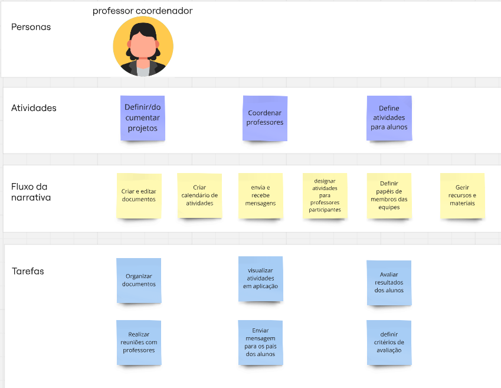
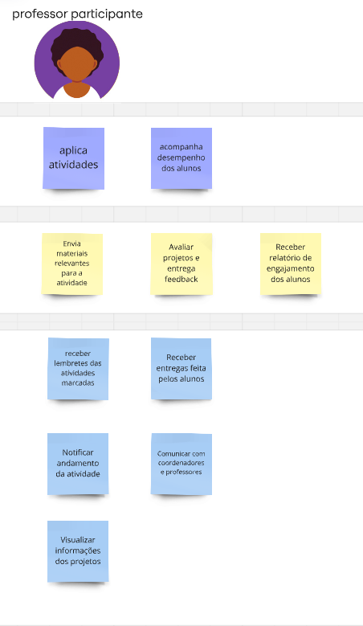
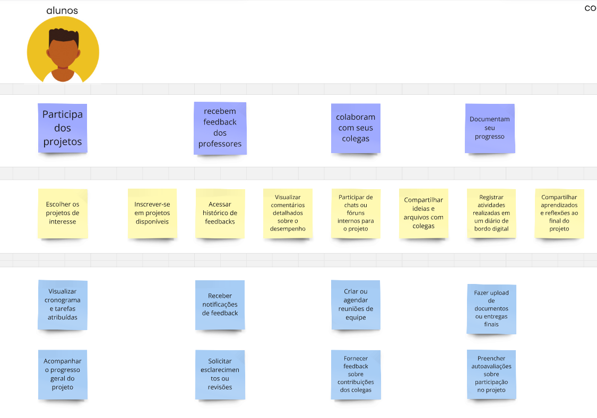
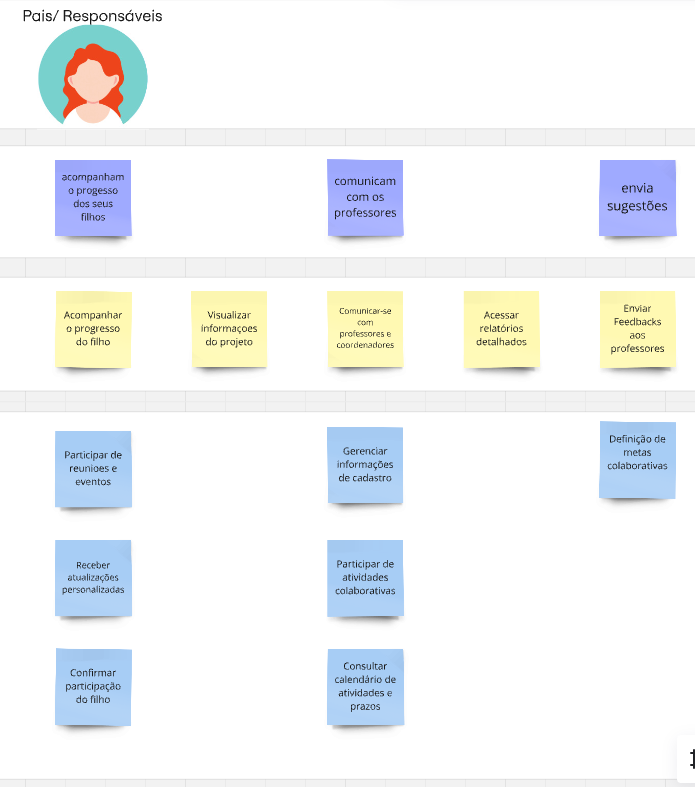
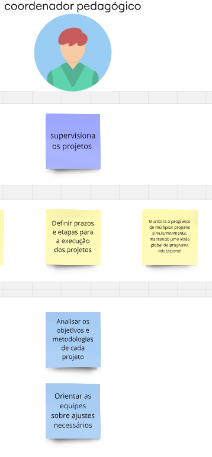
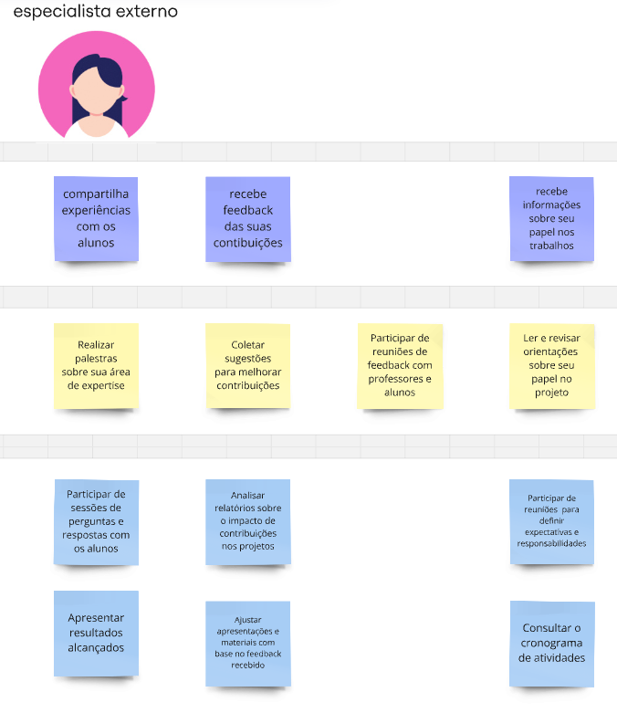

Estudo de Caso "EduConnect"
Contexto:
A atividade realizada em sala de aula envolveu o desenvolvimento do User Story Mapping para a EduConnect, uma escola que tem uma metodologia própria de ensino. A escola incentiva os professores a fazerem atividades interdisciplinares em parceria com vários professores. Os alunos realizam uma série de atividades diferentes conceitualizada pelo professor coordenador, e aplicada pelos professores participante. A metodologia inovadora trouxe vários desafios de organização para a equipe pedagógica e interessados, por isso se mostra necessário um produto de software para ajudar a combate-los.
Baseado em "Exercício de Construção de Backlog de Produto usando USM" passado em sala de aula pelo Prof. Dr. George Marsicano
Atividade realizada no MIRO, acesse por aqui.
Identificação do Produto:

Problemas:

Benefícios:

Mapa completo:

Caminhos:
Professor Coordenador

Professor Participante

alunos

Pais/Responsáveis

coordenador Pedagógico

Especialista Externo

Histórias de Usuários:
Aluno
US01 - Explorar e se inscrever em projetos
Eu, como aluno, quero visualizar e me inscrever em projetos disponíveis para que eu possa participar de atividades alinhadas ao meu interesse.
Critérios de aceitação:
- O aluno deve ser capaz de visualizar uma lista de projetos disponíveis, incluindo título, descrição e status.
- O sistema deve permitir que o aluno selecione um projeto e realize a inscrição.
- Apenas projetos com vagas abertas devem estar disponíveis para inscrição.
- O aluno deve receber uma confirmação após a inscrição bem-sucedida.
US02 - Visualizar cronogramas e tarefas
Eu, como aluno, quero visualizar cronogramas e tarefas atribuídas para que eu possa organizar as atividades do projeto.
Critérios de aceitação:
- O sistema deve exibir cronogramas detalhados dos projetos.
- O aluno deve conseguir visualizar tarefas atribuídas com prazos e status.
- O cronograma deve ser atualizado conforme mudanças nas atividades.
US03 - Acompanhar progresso no projeto
Eu, como aluno, quero acompanhar o meu progresso geral do projeto para que eu possa me organizar com as atividades.
Critérios de aceitação:
- O sistema deve exibir o progresso em porcentagem ou gráficos.
- O aluno deve ser capaz de visualizar conquistas e tarefas pendentes.
- O progresso deve refletir atualizações em tempo real com base nas atividades concluídas.
US04 - Gerenciar notificações e feedbacks
Eu, como aluno, quero receber e visualizar notificações de feedback para acompanhar minha evolução.
Critérios de aceitação:
- O sistema deve enviar notificações sempre que um feedback for publicado.
- O aluno deve poder visualizar detalhes do feedback diretamente pela notificação.
- O aluno deve conseguir acessar um histórico de feedbacks anteriores.
US05 - Visualizar comentários detalhados
Eu, como aluno, quero visualizar comentários detalhados sobre o meu desempenho para que eu possa melhorar meu desempenho.
Critérios de aceitação:
- O aluno deve ter acesso a comentários detalhados em cada tarefa realizada.
- O sistema deve exibir sugestões para melhoria específicas.
- Os comentários devem estar organizados por tarefa ou data.
US06 - Solicitar revisão de atividades
Eu, como aluno, quero solicitar revisões e esclarecimentos sobre minhas atividades para melhorar meu desempenho.
Critérios de aceitação:
- O sistema deve permitir que o aluno envie solicitações de revisão diretamente aos professores.
- O aluno deve poder anexar comentários e arquivos explicando a solicitação.
- O professor deve ser notificado sobre a solicitação e poder responder dentro do sistema.
US07 - Comunicação e colaboração em projetos
Eu, como aluno, quero participar de um espaço de comunicação interna para compartilhar ideias, dúvidas e arquivos com meus colegas.
Critérios de aceitação:
- O sistema deve disponibilizar um chat ou fórum para os participantes do projeto.
- O aluno deve ser capaz de enviar mensagens, compartilhar arquivos e visualizar respostas.
- O sistema deve permitir reações ou comentários às mensagens postadas.
US08 - Agendamento e participação em reuniões
Eu, como aluno ou responsável, quero agendar e participar de reuniões para facilitar a colaboração e o acompanhamento do projeto.
Critérios de aceitação:
- O sistema deve permitir o agendamento de reuniões, incluindo data, horário e participantes.
- Todos os membros da equipe devem ser notificados sobre o agendamento.
- O sistema deve gerar um link para videoconferência ou fornecer detalhes para uma reunião presencial.
- Os responsáveis devem poder visualizar e confirmar participação nas reuniões.
US09 - Fornecer feedback aos colegas
Eu, como aluno, quero fornecer feedback sobre contribuições dos colegas para que a equipe evolua em conjunto.
Critérios de aceitação:
- O aluno deve ser capaz de enviar feedbacks para contribuições específicas.
- O feedback deve ser registrado e visível apenas para o destinatário e coordenadores.
- O sistema deve permitir o registro de feedbacks positivos e sugestões de melhoria.
US10 - Registrar atividades em diário de bordo
Eu, como aluno, quero registrar atividades realizadas em um diário de bordo digital para que eu possa organizar meu progresso.
Critérios de aceitação:
- O diário deve permitir registro de atividades com descrição e data.
- O aluno deve poder visualizar e editar entradas anteriores.
- As entradas devem ser vinculadas aos projetos em andamento.
US11 - Fazer upload de documentos
Eu, como aluno, quero fazer upload de documentos ou entregas finais para que eu possa salvar meus arquivos.
Critérios de aceitação:
- O sistema deve permitir envio de documentos com limites de tamanho.
- O aluno deve ser capaz de visualizar e baixar os arquivos enviados.
- O sistema deve organizar os arquivos por projeto ou atividade.
US12 - Preencher autoavaliações
Eu, como aluno, quero preencher autoavaliações sobre participação no projeto para que eu possa analisar meu desempenho.
Critérios de aceitação:
- O sistema deve disponibilizar formulários de autoavaliação para os alunos.
- O aluno deve receber uma análise consolidada ao concluir o formulário.
- As autoavaliações devem ser armazenadas para consulta futura.
US13 - Compartilhar aprendizados ao final do projeto
Eu, como aluno, quero compartilhar aprendizados e reflexões ao final do projeto para que eu possa aplicar melhorias aos próximos projetos.
Critérios de aceitação:
- O aluno deve ser capaz de registrar reflexões em um espaço dedicado.
- O sistema deve organizar os aprendizados por projeto finalizado.
- Os aprendizados compartilhados devem ser acessíveis para consulta futura.
Pais/Responsável
US14 - Visualizar informações
Eu, como responsável, quero visualizar o projeto para obter informações do mesmo.
US15 - Confirmar participação
Eu, como responsável, quero confirmar a participação do filho no projeto para visualizar a participação no mesmo.
US16 - Acompanhar progresso
Eu, como responsável, quero acompanhar o progresso do filho para visualizar seu desempenho.
US17 - Enviar feedbacks
Eu, como responsável, quero enviar feedbacks aos professores para sugerir alterações no projeto.
US18 - Comunicar gestores
Eu, como responsável, quero me comunicar com professores e coordenadores para manter um contato próximo com os responsáveis do projeto.
US19 - Receber atualizações personalizadas
Eu, como responsável, quero receber atualizações personalizadas para acompanhar melhor o desempenho do filho.
US20 - Participação em atividades colaborativas
Eu, como responsável, quero participar de atividades colaborativas para incentivar o desempenho e progresso no projeto.
US21 - Acessar relatórios detalhados
Eu, como responsável, quero acessar relatórios detalhados para visualizar o que pode ser melhorado no projeto.
US22 - Atualizar informações de cadastro
Eu, como responsável, quero editar os dados cadastrais dos participantes, garantindo que as informações estejam sempre corretas e atualizadas no sistema.
US23 - Consultar calendários e prazos
Eu, como responsável, quero consultar o calendário de atividades e prazos para me manter informado sobre as atividades.
US24 - Visualizar definição de metas colaborativas
Eu, como responsável, quero visualizar a definição de metas colaborativas para acompanhar o desempenho do projeto.
Especialista Externo
US25 - Participar de sessões de perguntas e respostas
Eu, como especialista externo, quero participar de sessões de perguntas e respostas com os alunos para compartilhar experiências com eles.
US26 - Realizar palestras
Eu, como especialista externo, quero realizar palestras sobre minha área de expertise para compartilhar experiências com os alunos.
US27 - Apresentar resultados alcançados
Eu, como especialista externo, quero apresentar resultados alcançados para compartilhar experiências com os alunos.
US28 - Coletar sugestões para melhorias
Eu, como especialista externo, quero coletar sugestões para melhorar meu trabalho.
US29 - Participar de reuniões de feedback
Eu, como especialista externo, quero participar de reuniões de feedback com professores e alunos para melhorar meu trabalho.
US30 - Analisar relatórios de impacto
Eu, como especialista externo, quero analisar relatórios sobre o impacto de minhas contribuições nos projetos para melhorar meu trabalho.
US31 - Modificar apresentações e materiais
Eu, como especialista externo, quero modificar as apresentações e materiais com base nas sugestões e ajustes sugeridos, para melhorar a qualidade do trabalho.
US32 - Participar de reuniões de alinhamento
Eu, como especialista externo, quero participar de reuniões para definir expectativas e responsabilidades, para estar melhor informado sobre meu trabalho.
US33 - Consultar cronograma de atividades
Eu, como especialista externo, quero consultar o cronograma de atividades para estar melhor informado sobre meu trabalho.
US34 - Revisar orientações do projeto
Eu, como especialista externo, quero ler e revisar orientações sobre meu papel no projeto para estar melhor informado sobre minha responsabilidade.
Professor Participante
US35 - Receber lembretes das atividades
Eu, como professor participante, quero receber lembretes das atividades marcadas para que eu possa me organizar e acompanhar as tarefas dos alunos de forma eficiente.
US36 - Notificar andamento da atividade
Eu, como professor participante, quero notificar o andamento da atividade para que os alunos estejam cientes do progresso e possam ajustar suas ações quando necessário.
US37 - Enviar materiais relevantes para a atividade
Eu, como professor participante, quero enviar materiais relevantes para a atividade para que os alunos tenham recursos adequados para realizar as tarefas.
US38 - Visualizar informações dos projetos
Eu, como professor participante, quero visualizar informações dos projetos para que eu possa acompanhar o desenvolvimento e oferecer suporte direcionado.
US39 - Receber entregas dos alunos
Eu, como professor participante, quero receber entregas feitas pelos alunos para que eu possa avaliar e oferecer feedback sobre as atividades realizadas.
US40 - Receber relatório de engajamento dos alunos
Eu, como professor participante, quero receber relatório de engajamento dos alunos para que eu possa identificar alunos que precisam de mais suporte.
US41 - Avaliar projetos e entregar feedback
Eu, como professor participante, quero avaliar projetos e entregar feedback para que os alunos possam melhorar suas entregas e atingir os objetivos do projeto.
US42 - Comunicar com coordenadores e professores
Eu, como professor participante, quero me comunicar com coordenadores e professores para que eu possa alinhar objetivos e resolver problemas de forma colaborativa.
Professor Coordenador
US43 - Criar documentos
Eu, como professor coordenador, quero criar documentos para organizar e gerenciar os conteúdos do projeto, de modo que eu possa compartilhar informações de maneira eficiente com a equipe.
US44 - Editar documentos
Eu, como professor coordenador, quero editar documentos existentes para atualizar ou modificar os conteúdos do projeto, garantindo que as informações estejam sempre atualizadas e precisas.
US45 - Enviar mensagens
Eu, como professor coordenador, quero enviar mensagens para me comunicar com a equipe e os participantes, compartilhando informações ou solicitando ações quando necessário.
US46 - Receber mensagens
Eu, como professor coordenador, quero receber mensagens para acompanhar as comunicações da equipe e dos participantes, permitindo que eu esteja sempre informado sobre o andamento do projeto.
US47 - Avaliar resultados dos alunos
Eu, como professor coordenador, quero avaliar os resultados dos alunos para acompanhar seu desempenho e progresso.
US48 - Organizar documentos
Eu, como professor coordenador, quero organizar documentos para facilitar o acesso e consulta das informações do projeto.
US49 - Visualizar atividades em aplicação
Eu, como professor coordenador, quero visualizar atividades em aplicação para monitorar o andamento do projeto.
US50 - Definir critérios de aplicação
Eu, como professor coordenador, quero definir critérios de aplicação para garantir que as atividades atendam aos objetivos pedagógicos.
US51 - Criar calendários de atividades
Eu, como professor coordenador, quero criar calendários de atividades para organizar o cronograma do projeto.
US52 - Designar atividades para professores
Eu, como professor coordenador, quero designar atividades para professores participantes para distribuir tarefas de forma eficiente.
US53 - Definir papéis de membros das equipes
Eu, como professor coordenador, quero definir papéis de membros das equipes para estruturar melhor as responsabilidades.
US54 - Realizar reuniões com professores
Eu, como professor coordenador, quero realizar reuniões com professores para alinhar estratégias e metas do projeto.
US55 - Enviar mensagens aos pais
Eu, como professor coordenador, quero enviar mensagens para os pais dos alunos para mantê-los informados sobre o progresso.
US56 - Gerir recursos e materiais
Eu, como professor coordenador, quero gerir recursos e materiais para garantir que todos tenham o suporte necessário.
Coordenador Pedagógico
US57 - Definir prazos e etapas dos projetos
Eu, como coordenador pedagógico, quero definir prazos e etapas claras para a execução dos projetos para garantir que todas as atividades sejam realizadas dentro do cronograma previsto.
US58 - Analisar objetivos e metodologias dos projetos
Eu, como coordenador pedagógico, quero analisar os objetivos e metodologias dos projetos para assegurar que estejam alinhados aos objetivos educacionais da instituição.
US59 - Orientar equipes sobre ajustes nos projetos
Eu, como coordenador pedagógico, quero orientar as equipes sobre os ajustes necessários nos projetos para que os objetivos educacionais sejam alcançados de forma eficiente.
US60 - Monitorar progresso de múltiplos projetos
Eu, como coordenador pedagógico, quero monitorar o progresso de múltiplos projetos simultaneamente para manter uma visão geral e garantir que o programa educacional como um todo esteja bem encaminhado.
Histórico de Revisão
| Data | Versão | Descrição | Autores |
|---|---|---|---|
| 20/01/2025 | 1.0 | Criação do documento de USM | Bruno de Oliveira, João Pedro, Paola Rebeca, Pedro Fonseca |